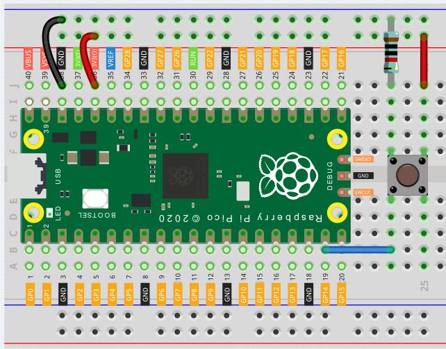
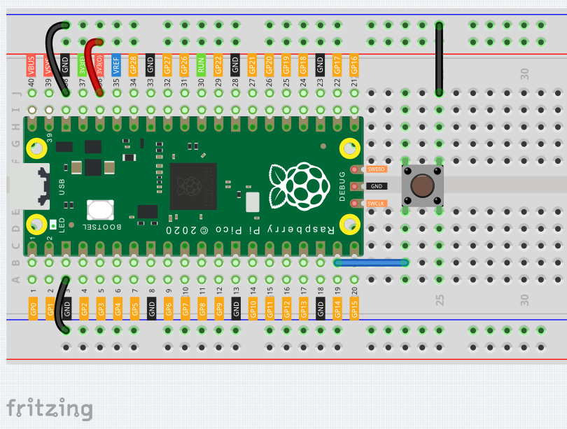
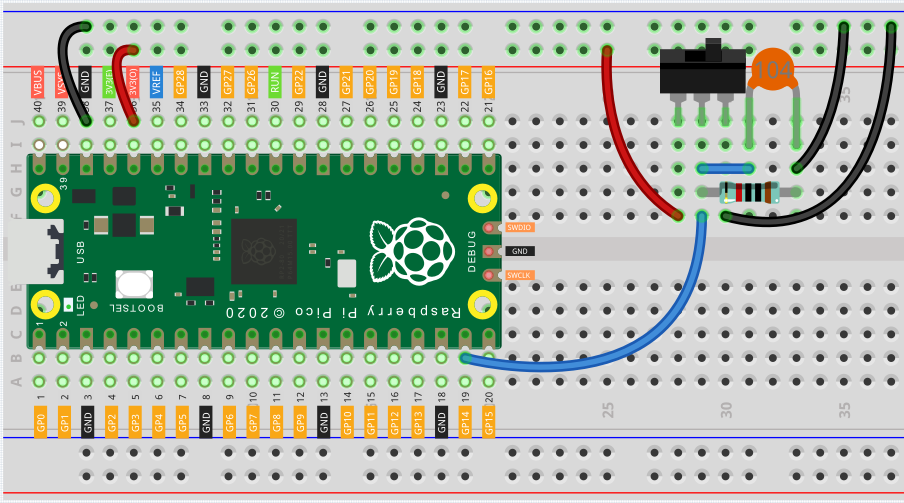

Reading Button Value¶
From the name of GPIO (General-purpose input/output), we can see that these pins have both input and output functions. In the previous two lessons, we used the output function, in this chapter we will use the input function to input read the button value.
Wiring¶
Let’s follow the direction of the circuit to build the circuit!
Connect the 3V3 pin of Pico to the positive power bus of the breadboard.
Insert the button into the breadboard and straddle the central dividing line.
Note
We can think of the four-legged button as an H-shaped button. Its left (right) two feet are connected, which means that after it straddles the central dividing line, it will connect the two half rows of the same row number together. (For example, in my circuit, E23 and F23 have been connected, as are E25 and F25).
Before the button is pressed, the left and right sides are independent of each other, and current cannot flow from one side to the other.
Use a jumper wire to connect one of the button pins to the positive bus (mine is the pin on the upper right).
Connect the other pin (upper left or lower left) to GP14 with a jumper wire.
Use a 10K resistor to connect the pin on the upper left corner of the button and the negative bus.
Note
The color ring of the 10kΩ resistor is brown, black, black, red, brown.
Buttons require pull-up resistors or pull-down resistors. If there is no pull-up or pull-down resistor, the main controller may receive a ‘noisy’ signal which can trigger even when you’re not pushing the button.
Connect the negative power bus of the breadboard to Pico’s GND.
Code¶
When the button is pressed, the current will flow from 3V3 through the button to GP14, in other words, GP14 will read a high-level signal ‘1’; otherwise, it will read a low-level signal ‘0’.
import machine
import utime
button = machine.Pin(14, machine.Pin.IN)
while True:
if button.value() == 1:
print("You pressed the button!")
utime.sleep(1)
Pull-up Working Mode¶
Next is the wiring and code when the button in the pull-up working mode, please try it.
Connect the 3V3 pin of Pico to the positive power bus of the breadboard.
Insert the button into the breadboard and straddle the central dividing line.
Use a jumper wire to connect one of the button pins to the negative bus (mine is the pin on the upper right).
Connect the other pin (upper left or lower left) to GP14 with a jumper wire.
Use a 10K resistor to connect the pin on the upper left corner of the button and the positive bus.
Connect the negative power bus of the breadboard to Pico’s GND.
import machine
import utime
button = machine.Pin(14, machine.Pin.IN)
while True:
if button.value() == 0:
# When the button is pressed, GPIO will be connected to GND.
print("You pressed the button!")
utime.sleep(1)
Also see the reference here:
What more?¶
There are two components in this kit that work on the same principle as buttons, they are tilt switch and slide switch. These components can use the same code as the button. Their wiring is as follows:
Tilt switch

Connect the 3V3 pin of Pico to the positive power bus of the breadboard.
Insert the tilt switch into the breadboard.
Use a jumper wire to connect one end of tilt switch pin to the positive bus.
Connect the other pin to GP14 with a jumper wire.
Use a 10K resistor to connect the second pin (which connected to GP14) and the negative bus.
Connect the negative power bus of the breadboard to Pico’s GND.
When you put a flat breadboard, the circuit will be closed. When you tilt the breadboard, the circuit is open.
Slide switch
Connect the 3V3 pin of Pico to the positive power bus of the breadboard.
Insert the slide switch into the breadboard.
Use a jumper wire to connect one end of slide switch pin to the negative bus.
Connect the middle pin to GP14 with a jumper wire.
Use a jumper wire to connect last end of slide switch pin to the positive bus
Use a 10K resistor to connect the middle pin of the slide switch and the negative bus.
Use a 104 capacitor to connect the middle pin of the slide switch and the negative bus to realize debounce that may arise from your toggle of switch.
Connect the negative power bus of the breadboard to Pico’s GND.
When you toggle the slide switch, the circuit will switch between closed and open.